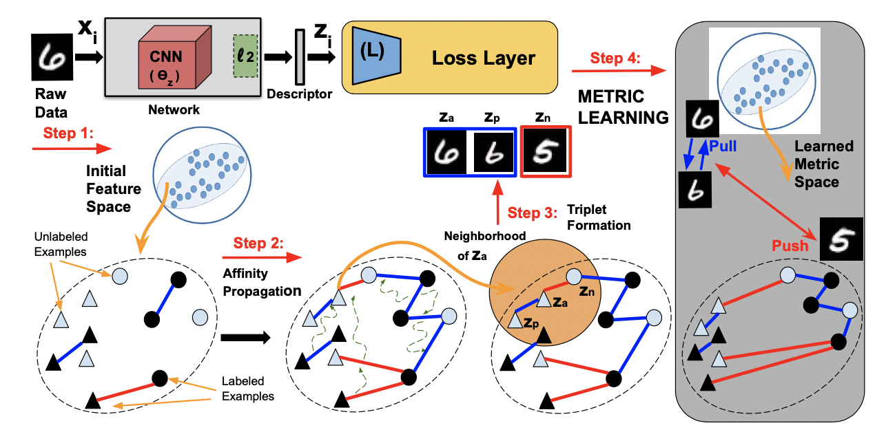
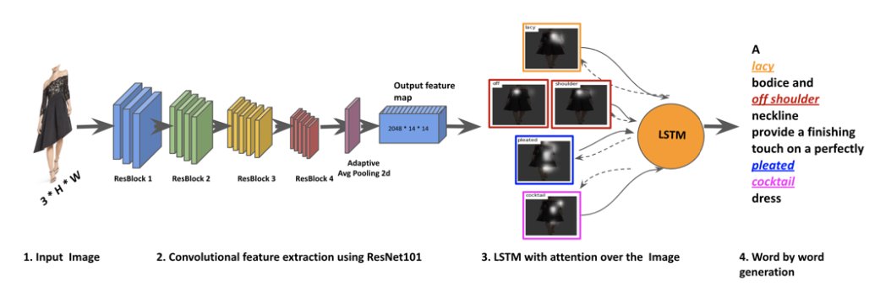
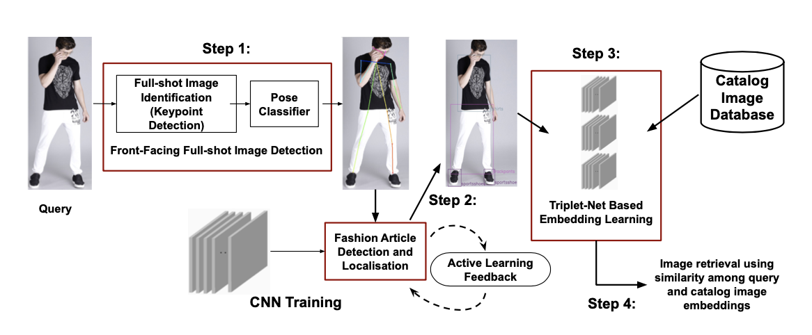
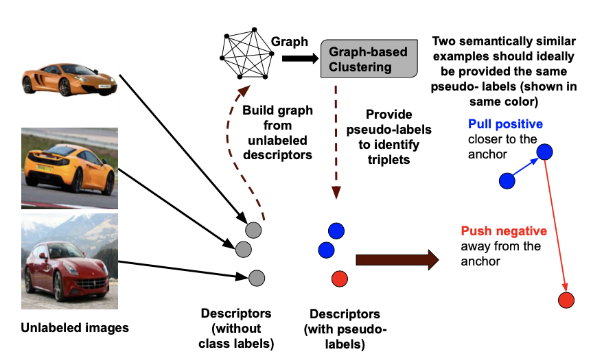
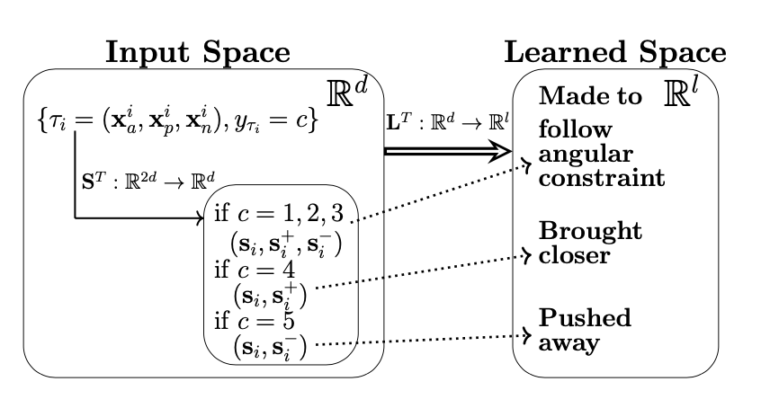
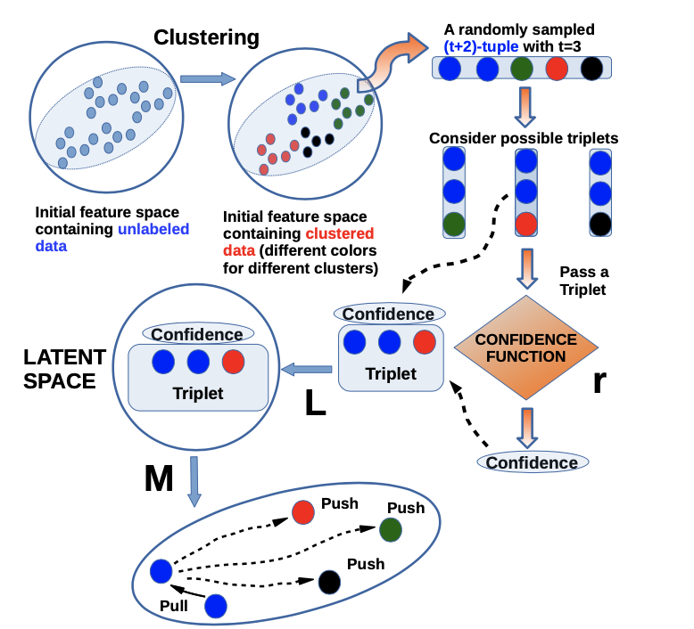
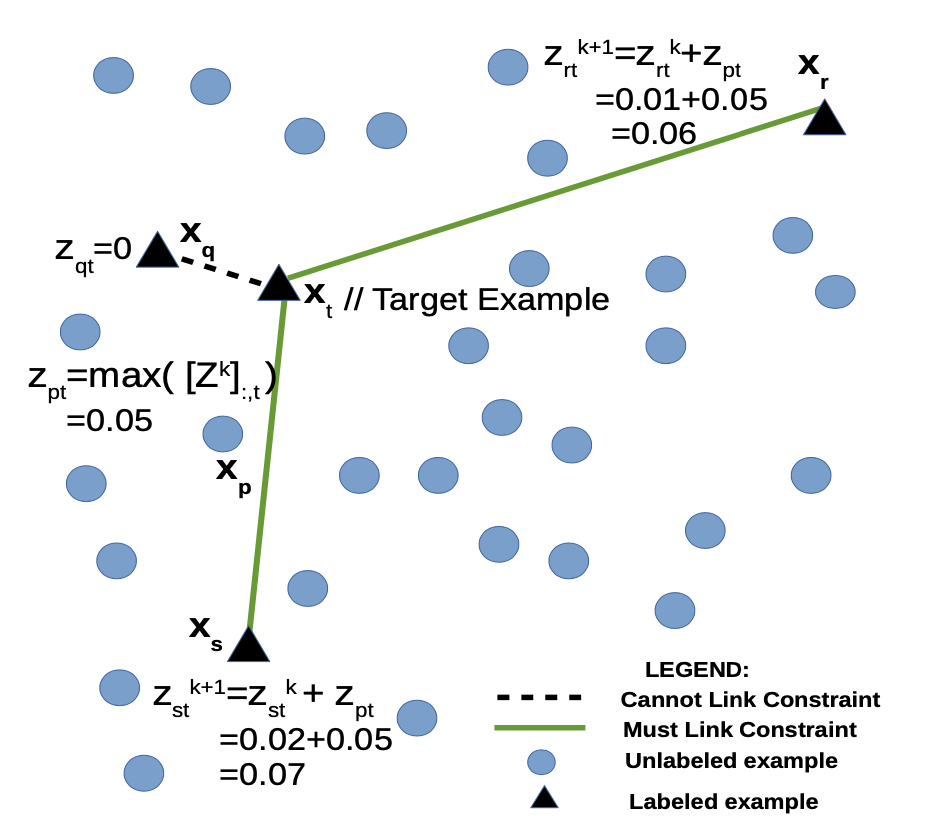
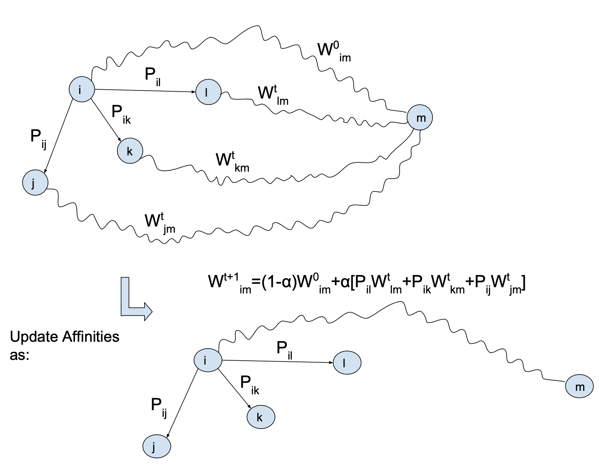

I no longer maintain this site. Please visit my updated website
I am a Senior Data Scientist at Myntra Designs , a leading fashion e-commerce platform. I obtained my PhD under the supervision of Dr C Chandra Sekhar, at the Indian Institute of Technology Madras, India. I also collaborate with Dr Mehrtash Harandi from Monash University / Data61-CSIRO / Australian Center for Robotic Vision (ACRV).|

|
Semi-Supervised Metric Learning: A Deep Resurrection
Ujjal Kr Dutta , Mehrtash Harandi, and Chandra Sekhar Chellu. In AAAI Conference on Artificial Intelligence (AAAI) (2020 h5-index: 126). Virtual. February 2-9, 2021. (Acceptance rate: 21%, 1692 out of 9034 papers). |
|

|
Attr2Style: A Transfer Learning Approach for Inferring Fashion Styles via Apparel Attributes
Rajdeep Hazra Banerjee, Abhinav Ravi and Ujjal Kr Dutta. In Annual Conference on Innovative Applications of Artificial Intelligence (IAAI), colocated with AAAI Conference on Artificial Intelligence (AAAI) Virtual. February 4-6, 2021. |
|

|
Buy Me That Look: An Approach for Recommending Similar Fashion Products
Abhinav Ravi, Sandeep Repakula, Ujjal Kr Dutta and Maulik Parmar. In IEEE International Conference on Multimedia Information Processing and Retrieval (MIPR). Tokyo, Japan. September 8-10, 2021. |
|
|
Affinity guided Geometric Semi-Supervised Metric Learning
Ujjal Kr Dutta , Mehrtash Harandi, and Chandra Sekhar Chellu. In Differential Geometry meets Deep Learning workshop at Neural Information Processing Systems (NeurIPS) (2020 h5-index: 198). Virtual. December 6-12, 2020. pdf (arXiv) |
|

|
Unsupervised Deep Metric Learning via Orthogonality based Probabilistic Loss
Ujjal Kr Dutta , Mehrtash Harandi, and Chandra Sekhar Chellu. In IEEE Transactions on Artificial Intelligence (IEEE TAI) DOI: 10.1109/TAI.2020.3026982. pdf(in arXiv) code |
|

|
Unsupervised Metric Learning with Synthetic Examples
Ujjal Kr Dutta , Mehrtash Harandi, and Chandra Sekhar Chellu. In AAAI Conference on Artificial Intelligence (AAAI) (2020 h5-index: 126). New York, USA. February 7-12, 2020. (Acceptance rate: 20.6%, 1591 out of 7737 papers) (Spotlight). pdf code |
|

|
A Geometric Approach for Unsupervised Similarity Learning
Ujjal Kr Dutta , and Chandra Sekhar Chellu. In IEEE International Conference on Acoustics, Speech, and Signal Processing (ICASSP) (2020 h5-index: 86). Barcelona, Spain. May 4-8, 2020. |
|

|
Subspace Segmentation Based Metric Learning
Ujjal Kr Dutta , and Chandra Sekhar Chellu. In IEEE International Conference on Image Processing (ICIP) (2020 h5-index: 52). Athens, Greece. October 7-10, 2018. |
|

|
Affinity Propagation Based Closed-Form Semi-supervised Metric Learning Framework
Ujjal Kr Dutta , and Chandra Sekhar Chellu. In International Conference on Artificial Neural Networks (ICANN) (2019 h5-index: 16). Rhodes, Greece. October 4-7, 2018. |
I have extensively worked on Representation / Embedding / Metric Learning with limited supervision (semi-/un-/self-supervised), and Optimization on Riemannian Manifolds.
Broadly, my works spanned at the intersection of manifold learning, semi-supervised learning, graph-based methods, subspace segmentation (Low-Rank Representation using ADMM), Kernel Learning, Clustering (Subspace, Spectral, Constrained, Fuzzy), Transfer Learning / Domain Adaptation. I am also interested in Zero-/ Few-/ Low-Shot Learning, Multi-Task/-Domain Learning, Continual Learning and Neural Architecture Search.
I also have Industrial research experience on applications of computer vision problems like Object detection, Segmentation/ Semantic Parsing, Pose Estimation/ Key-point Detection, 3-D Computer Vision and Graphics models, Virtual Try-On, and other applications of Convolutional Neural Networks, Generative Adversarial Networks, Encoders and Decoders.
Program Committee Member / Reviewer by invitation at:
International Journals:
When I am not engaged in a research problem, I like to involve myself in either of the following activities: Olympic-style Weightlifting, Powerlifting or Mixed Martial Arts (MMA). During my stay in the PhD programme, I got a lot of opportunities to participate, and win, in many of the competitions involving these sports. In particular, I was 4 times Strongman (2015, 2017, 2018, 2019) in IITM Powerlifting (for lifting the highest weight per pound of body weight), 1 time silver medalist representing IITM at Chennai district level Olympic-style Weightlifting competition (2015), and 1 time silver medalist at the national level Inter-IIT Tournament in Olympic-style Weightlifting (2017).
Senior Data Scientist
Myntra, Bangalore
ukdATcseDOTiitmDOTacDOTin
Google Scholar
Google Site
LinkedIn
DBLP
GitHub
Twitter
Many thanks to William L. Hamilton for the site template/inspiration